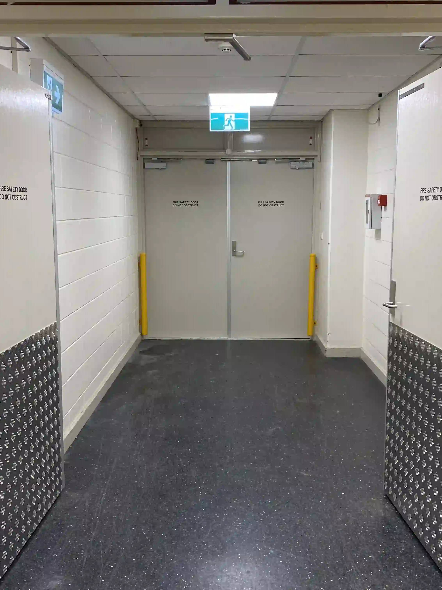

Fire Door Inspections
Fire Door Inspections, Maintenance and Compliance

Fire Door Inspections, Maintenance and Compliance
The Queensland Development Code (QDC) part MP 6.1 requires building occupiers to complete an 'Occupiers Statement' annually and submit the statement on completion to the Queensland Fire and Rescue Service, confirming that fire safety installations have been maintained.
Lock Up Industries can assist you in meeting your maintenance and record keeping obligations for prescribed fire safety installations in accordance with the QDC. Fire door inspections and maintenance are carried out in accordance with AS1851-2012, Building Fire Safety Regulation 2008 & Queensland Development Code MP6.1. Routine fire door inspections and maintenance will ensure the fire doors in your building are functioning correctly and safely.
Fire doors can easily become non-compliant when the doors’ integrity has been modified. Often this is caused by unlicensed people making adjustments or alterations to fire doors, such as installation of a non-fire rated lock, removal of the door closer, installation of a dead bolt, and hold open devices, etc.
It is important that fire door inspections are carried out on a regular basis as prescribed for the building classification to ensure the protection of people and property. What may seem to be the smallest of modifications to a fire door can have a devastating effect on the whole building in the case of a fire.
As part of Lock Up Industries' complete service, a detailed quotation listing costs of any remedial repairs or replacements for fire safety installations which do not comply with the standards can be provided.